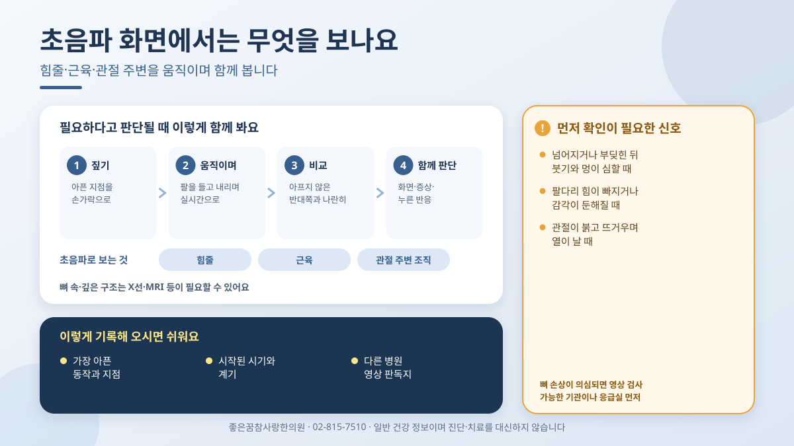

초음파로는 아픈 부위의 힘줄과 근육, 관절 주변 조직의 모양과 움직임을 화면으로 함께 보며 어느 지점이 예민한지 확인하고, 뼈 속이나 깊은 구조는 X선·MRI 등 다른 검사가 필요할 수 있습니다.
여쭙는 것
- 어느 동작에서 가장 아픈가요?
- 아픈 지점을 손가락으로 짚을 수 있나요?
- 최근 X선이나 MRI를 찍은 적이 있나요?
생활에서 해 볼 것
- 아픈 동작과 시간대를 메모해 두기
- 부위를 쉽게 드러낼 수 있는 옷 입기
- 다른 병원의 영상 판독지가 있으면 챙기기
한의원에서 함께 살필 것
- 같은 부위 통증이 반복되는 경우 초음파로 함께 보며 예민한 지점을 찾습니다.
- 치료 방법을 정할 때 화면에서 본 모습을 참고합니다.
- 다음 방문 때 같은 위치를 다시 보며 달라진 점을 확인합니다.
먼저 확인이 필요한 신호
- 넘어지거나 부딪힌 뒤 붓기와 멍이 심한 경우
- 팔다리 힘이 빠지거나 감각이 둔해진 경우
- 관절이 붉고 뜨거우며 열이 나는 경우

초음파를 보며 설명을 들으면 화면 속 회색 무늬가 무엇인지 궁금하다는 분이 많습니다. 초음파는 피부 아래 힘줄과 근육, 관절 주변을 실시간으로 비춰 보는 방법이라 움직이면서 함께 볼 수 있다는 점이 특징입니다.
예를 들어 어깨가 아파 오신 분은 팔을 천천히 들고 내리는 동안 화면에서 힘줄이 어떻게 움직이는지 함께 봅니다. 아프지 않은 반대쪽과 나란히 비교하면 차이가 더 잘 보이는 경우도 있습니다. 화면을 함께 보며 설명드리지만, 초음파에서 보이는 모습만으로 원인을 단정하지는 않고 말씀해 주신 증상과 진찰 내용을 함께 봅니다.
왜 초음파로 함께 보면 좋을까요
- 누르면 아픈 지점과 화면 속 조직을 나란히 맞춰 볼 수 있습니다.
- 움직이는 동안의 모습을 실시간으로 확인할 수 있습니다.
- 말로 설명하기 어려운 불편을 화면을 보며 이야기하기 쉬워집니다.
- 다만 뼈 속이나 깊은 구조는 잘 보이지 않는 한계가 있습니다.
- 아프지 않은 반대쪽과 비교해 보면 차이를 이해하기 쉽습니다.

먼저 이렇게 여쭙니다
- 어느 동작에서 가장 아픈가요?
- 아픈 지점을 손가락으로 짚을 수 있나요?
- 최근 X선이나 MRI를 찍은 적이 있나요?
- 다친 기억이 있나요?
일상에서 먼저 해 볼 수 있는 것
- 아픈 동작과 시간대를 메모해 두기
- 부위를 쉽게 드러낼 수 있는 옷 입기
- 다른 병원의 영상 판독지가 있으면 챙기기
- 검사 전 그 부위에 파스를 붙이지 않기
- 양쪽을 비교할 수 있게 반대쪽도 드러내기 쉬운 옷 입기

한의원에서 함께 살필 수 있는 경우
- 같은 부위 통증이 반복되는 경우 초음파로 함께 보며 예민한 지점을 찾습니다.
- 치료 방법을 정할 때 화면에서 본 모습을 참고합니다.
- 다음 방문 때 같은 위치를 다시 보며 달라진 점을 확인합니다.
좋은꿈참사랑한의원에서는 진찰 후 필요하다고 판단될 때 초음파로 아픈 부위를 함께 살피고, 그 결과를 참고해 침·약침·추나·체외충격파 등을 상태에 맞춰 정합니다. 뼈나 디스크처럼 다른 영상이 필요한 경우 영상 검사가 가능한 의료기관을 안내해 드립니다.
헷갈리기 쉬운 점
초음파에서 별다른 변화가 보이지 않아도 통증이 없는 것은 아닙니다. 반대로 화면에 변화가 보여도 지금의 통증과 직접 관련이 없는 경우도 있습니다. 그래서 화면과 증상, 눌렀을 때의 반응을 함께 놓고 판단합니다.

이렇게 기록해 오시면 상담이 쉬워집니다
- 가장 아픈 동작과 지점
- 통증이 시작된 시기와 계기
- 다른 병원 영상 판독지
- 복용 중인 진통제
- 아프지 않은 쪽과 비교해 다른 점
이런 증상은 먼저 확인이 필요합니다
- 넘어지거나 부딪힌 뒤 붓기와 멍이 심한 경우
- 팔다리 힘이 빠지거나 감각이 둔해진 경우
- 관절이 붉고 뜨거우며 열이 나는 경우
복용 중인 약은 처방한 의사와 상의 없이 줄이거나 끊지 않습니다. 다친 직후 뼈 손상이 의심되면 영상 검사가 가능한 의료기관이나 응급실을 먼저 찾으세요.
한눈에 보는 표
| 구분 | 핵심 |
|---|---|
| 여쭙는 것 | 어느 동작에서 가장 아픈가요? 아픈 지점을 손가락으로 짚을 수 있나요? |
| 생활에서 해 볼 것 | 아픈 동작과 시간대를 메모해 두기 부위를 쉽게 드러낼 수 있는 옷 입기 |
| 한의원에서 함께 살필 것 | 같은 부위 통증이 반복되는 경우 초음파로 함께 보며 예민한 지점을 찾습니다. 치료 방법을 정할 때 화면에서 본 모습을 참고합니다. |
| 먼저 확인이 필요한 신호 | 넘어지거나 부딪힌 뒤 붓기와 멍이 심한 경우 팔다리 힘이 빠지거나 감각이 둔해진 경우 |
자주 묻는 질문
초음파만으로 다 알 수 있나요?
아닙니다. 뼈 속이나 깊은 구조는 X선·MRI 등이 필요할 수 있습니다.
아픈가요?
젤을 바르고 탐촉자를 대는 방식이라 대개 아프지 않습니다. 누르는 지점이 불편하면 말씀해 주세요.
MRI 결과도 봐 주시나요?
판독지를 참고하며, 영상 판독은 영상의학과 판독 내용을 기준으로 합니다.
검사 시간은 얼마나 걸리나요?
부위와 상태에 따라 다르며, 방문 전 전화로 대략의 시간을 여쭤 보실 수 있습니다.
이 글은 일반적인 건강 정보이며 개인의 진단이나 치료를 대신하지 않습니다. 증상이 있거나 복용 중인 약이 있다면 진료를 통해 확인하세요. 치료 효과는 개인마다 다를 수 있습니다.
작성 기준: 일반적으로 알려져 있는 건강 정보를 참고해 정리했습니다(대표원장 감수). 증상 기록은 1~2주 동안 하루 1회, 비슷한 시간에 적어 오시면 지난 상태와 비교하기 쉽습니다.
좋은꿈참사랑한의원은 재진 때 지난번 이야기부터 이어서 여쭙니다. 진료시간과 예약은 오시는 길에서 확인하세요.
어디서 상담받을 수 있나요?
좋은꿈참사랑한의원은 서울 동작구 만양로2길 2 신성빌딩 3층·5층(서울 동작구 상도동, 7호선 상도역 3번 출구 근처)에 있습니다. 한의사 3명(이종호 대표원장, 조영기 수석진료원장, 정원영 진료원장)이 진료합니다. 진료시간은 평일 09:30~20:00(점심 13:00~14:00), 토·일·공휴일 09:30~15:00이며, 방문 전 전화로 확인을 권합니다. 예약은 네이버 예약, 카카오톡 상담, 전화 02-815-7510로 받습니다.